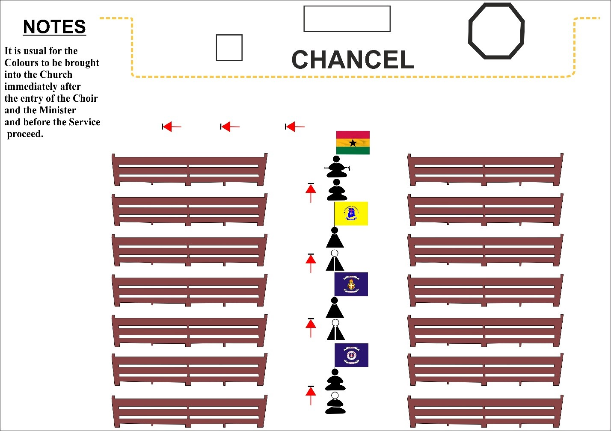

Diagramatic Representation of Colours

From the earliest times, Emblems and Colours have been used as a distinguishing mark of every Organisation.
NB: Flags which have been consecrated are called “COLOURS”
Beginning of the Service.
NB: The Colour Party remain Attention during National Anthem or Halleluiah Chorus.